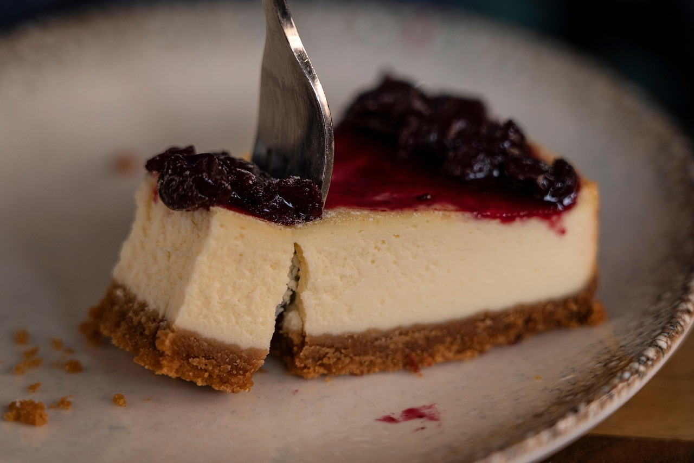
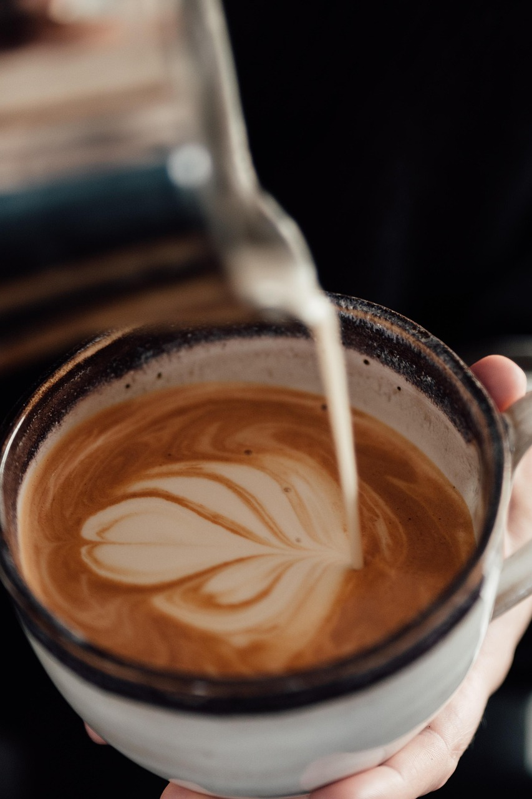

My Favorite Foods
Here are my top 5 favorite, random foods I have an obsession with along with some fun facts to get to know me!
-
Cheesecake
One of my hobbies is baking, and I actually plan to bake a cheesecake this summer. I found an amazing recipe that I'll follow, and the result looks phenomenal.
-
Cashews
I personally love munching and crunching on these. I'm more of a texture person when it comes to food, and I like eating food that's fun to eat.
-
Coffee
My favorite coffee to drink during the warmer months is iced and steaming hot during the colder months.
-
Pasta
I think Italian cuisine might be my favorite type of food.
-
Oats
Before I go to bed, I prepare overnight oats and it's honestly the main reason I look forward to waking up the next day.